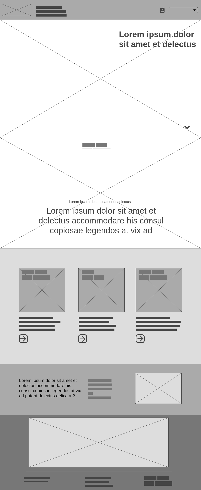
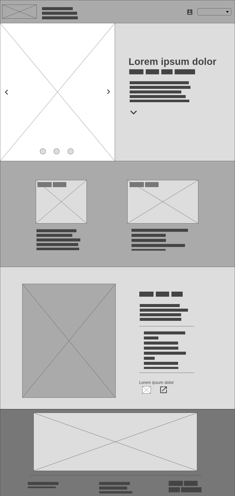

PROTO-PERSONAS
Andy (19)
Es estudiante universitario norteamericano y vive con dos roomies en una residencia universitaria de su campus. Pasa su tiempo estudiando, dibujando y hablando con sus compañeros. No suele jugar videojuegos a no ser que lo inviten sus amigos.
Busca ejemplos para encontrar inspiración para los dibujos que hace en su tiempo libre.
Nacho (27)
Es egresado de psicología y trabaja en Santiago en una consulta y en su home office desde hace 3 años y medio. Vive en un departamento que arrienda con su pareja. Cuando no trabaja prefiere pasar el tiempo en su hogar y una de sus actividades favoritas es jugar videojuegos. Es jugador frecuente de Space Engineers y se considera competente en el juego.
Busca descubrir nuevas naves y/o vehículos para importar y probarlas para mostrarle a los amigos que tiene en el juego.
Norbert (24)
Es estudiante de ingeniería informática, pero se ha tomado un año sabático para descansar. Vive con su perro en un departamento pequeño. Es un Gamer empedernido y pasa la mayoría de su tiempo jugando o consumiendo cultura geek. Es un jugador avanzado de Space engineers y participa activamente en la comunidad creando, compartiendo e interactuando con las creaciones ajenas y propias.
Busca explorar nuevas creaciones para descargar, inspeccionar y aplicar lo aprendido en sus propias creaciones.
MOODBOARD

COLORES
La carta cromática usa en su mayoría colores fríos y poco saturados para darle una evocación "espacial" a la página. Los colores principales son el azul y negro; los cuales complementan a cuatro colores inspirados en naves aeroespaciales: beige, salmón, verde-azul y blanco.
TIPOGRAFÍAS

Bruno Ace
Tipografía display simple sin serifas, grosor de línea consistente y estilo sci-fi. Uso para textos de tamaño grande como títulos.

Open sans
Tipografía sans serif sencilla y de fácil lectura, apta para su uso en los párrafos y el cuerpo de la página.
ANTECEDENTES
Wireframe de portada
Es importante que aquí indique qué partes toma de cada antecedente. También puede sumar alguna indicación que apoye la correctar lectura de su Wireframe. Recuerde que puede usar wireframe.cc, AdobeXD, Figma o el programa que más le acomode para resolver esta versión esquemática de la página de manera rápida, obtieniendo un resultado claro.
Wireframe de página interior
Es importante que aquí indique qué partes toma de cada antecedente. También puede sumar alguna indicación que apoye la correctar lectura de su Wireframe. Recuerde que puede usar wireframe.cc, AdobeXD, Figma o el programa que más le acomode para resolver esta versión esquemática de la página de manera rápida, obtieniendo un resultado claro.